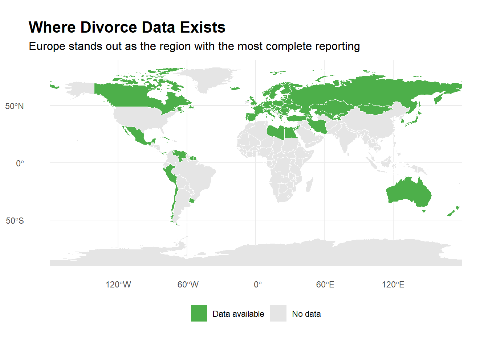
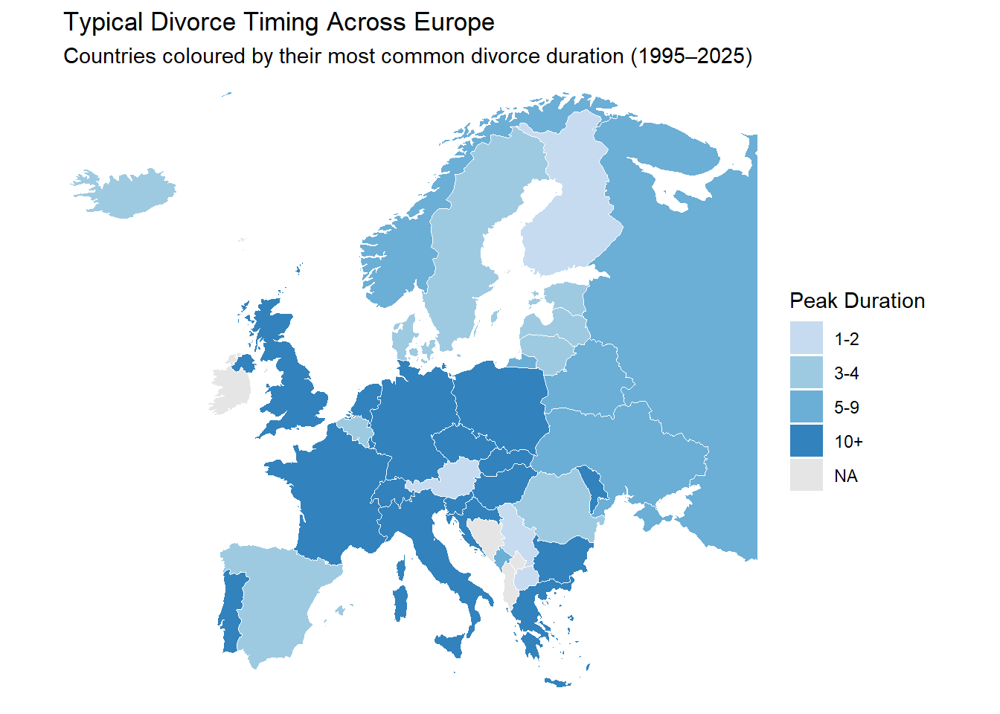
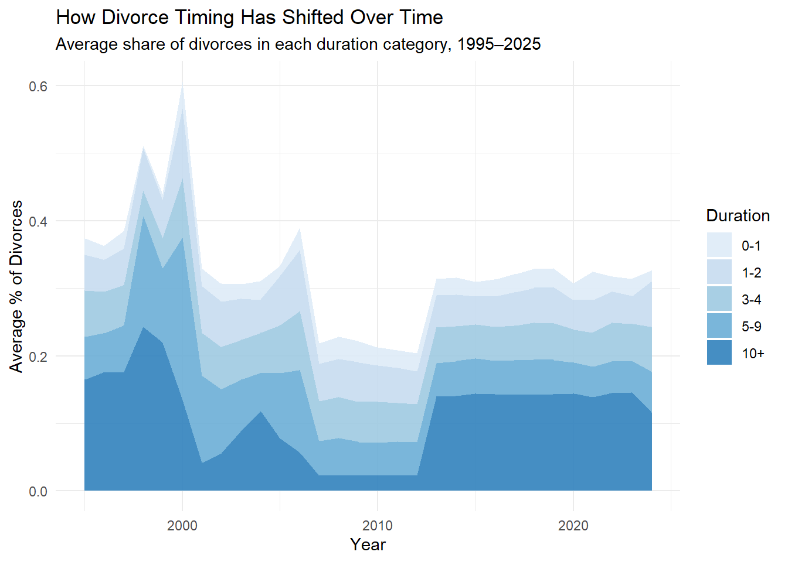

# Data cleaning before analysis
# ============================================================
# 1. Load packages and raw data
# ============================================================
library(tidyverse)
library(janitor)
library(countrycode)
library(stringr)
library(sf)
library(rnaturalearthdata)
library(rnaturalearth)
library(knitr)
divorce_data <- read_csv("data/UNdata_Export_20260528_021328529.csv")
# ============================================================
# 2. Initial cleaning (remove footnotes)
# ============================================================
divorce_data <- divorce_data |>
clean_names() |>
mutate(
duration_of_marriage = str_trim(duration_of_marriage),
year = str_trim(year)
) |>
# Keep only valid 4-digit years (removes footnotes)
filter(str_detect(year, "^[0-9]{4}$"))
# ============================================================
# 3. Construct percent-of-total (create comparable measures)
# ============================================================
# Step 1: Extract and rank "Total" rows by data quality
totals <- divorce_data |>
filter(duration_of_marriage == "Total") |>
mutate(
quality_rank = case_when(
reliability == "Final figure, complete" ~ 1,
record_type == "Data tabulated by year of occurrence" ~ 2,
record_type == "Data tabulated by year of registration" ~ 3,
TRUE ~ 4
)
) |>
arrange(country_or_area, year, quality_rank) |>
group_by(country_or_area, year) |>
slice(1) |> # <-- Keep only the best single row
ungroup() |>
select(country_or_area, year, total_value = value)
# Step 2: Keep duration categories only
details <- divorce_data |>
filter(!duration_of_marriage %in% c("Total", "Not stated"))
# Step 3: Join totals back in and compute percent_of_total
clean_divorce <- details |>
left_join(totals, by = c("country_or_area", "year")) |>
mutate(
percent_of_total = value / total_value,
# Add column continent for further grouping analysis
continent = countrycode(country_or_area, "country.name", "continent")
) |>
# Keep only recent 30 years
filter(as.numeric(year) >= 1995)
# ============================================================
# 4. Standardise duration-of-marriage categories
# ============================================================
clean_divorce <- clean_divorce |>
mutate(
# Extract all numbers from the bucket (handles "1", "1-3", "10 +", "Less than 5")
nums = str_extract_all(duration_of_marriage, "\\d+"),
nums = lapply(nums, as.numeric),
# Determine the maximum number in the bucket
max_years = sapply(nums, function(x) if(length(x) == 0) NA else max(x)),
# Adjust for "Less than X" so upper bound becomes X - 1
max_years = case_when(
str_detect(str_to_lower(duration_of_marriage), "less") ~ max_years - 1,
TRUE ~ max_years
),
# Standardise into global bins
duration_std = case_when(
max_years <= 1 ~ "0-1",
max_years <= 2 ~ "1-2",
max_years <= 4 ~ "3-4",
max_years <= 9 ~ "5-9",
max_years >= 10 ~ "10+",
TRUE ~ NA_character_
)
) |>
select(-nums, -max_years, - duration_of_marriage)
# ============================================================
# 5. Harmonise country names for mapping
# ============================================================
world <- ne_countries(scale = "medium", returnclass = "sf")
world_names <- world |>
st_drop_geometry() |>
select(name)
# Find the mismatch in names spelling
mismatch <- clean_divorce |>
distinct(country_or_area) |>
anti_join(world_names, by = c("country_or_area" = "name"))
# Build the lookup table
name_fix <- tribble(
~country_or_area, ~name,
"Brunei Darussalam", "Brunei",
"China, Macao SAR", "Macau",
"Iran (Islamic Republic of)", "Iran",
"Netherlands (Kingdom of the)", "Netherlands",
"Republic of Korea", "South Korea",
"Republic of Moldova", "Moldova",
"Russian Federation", "Russia",
"State of Palestine", "Palestine",
"Türkiye", "Turkey",
"United Kingdom of Great Britain and Northern Ireland", "United Kingdom",
"Venezuela (Bolivarian Republic of)", "Venezuela"
)
# Apply to fixes
clean_divorce <- clean_divorce |>
left_join(name_fix, by = "country_or_area") |>
mutate(
country = if_else(is.na(name), country_or_area, name)
) |>
select(-name, -country_or_area) |>
relocate(country)
# ============================================================
# 6. Final dataset preparation (Restrict dataset to Europe)
# ============================================================
# The dataset was filtered to include only European countries, reflecting the region with the most complete reporting.
europe_divorce <- clean_divorce |> filter(continent == "Europe") |>
# Keep only relevant columns
select(-area, -record_type, -reliability, -source_year, -value_footnotes, -continent) |> relocate(duration_std, .after = year)
write_csv(europe_divorce, "data/clean_europe_divorces_by_duration_of_marriage.csv")Is The Seven-Year Itch Real?
Assignment 4 ETC5512
Topic of this work
This blog post investigates whether the cultural idea of the Seven-Year Itch—the belief that marriages tend to break down around the seven-year mark—has any empirical support in global divorce data. Although the concept is widely referenced in popular culture, it has rarely been examined using large-scale longitudinal evidence. By analysing divorce patterns across countries and over time, this dataset provides a unique opportunity to evaluate a familiar cultural belief through a demographic lens.
Data description
This analysis uses the Divorces by duration of marriage dataset from the United Nations Statistics Division (UNSD), which provides official administrative counts of all recorded divorces by duration of marriage. These are census‑style population data derived from national civil registration systems, making them well‑suited to examining when divorces typically occur and whether they cluster around the so‑called “Seven‑Year Itch.” The dataset covers 105 countries, with the most consistent reporting for European countries. For this analysis, the period 1995-2025 is used to provide a clean and comparable 30-year window. It is released under the UNdata Terms of Use, permitting academic reuse with attribution, and contains only aggregated counts with no personal identifiers, so there are no privacy risks. Key limitations include incomplete global coverage, variation in duration‑of‑marriage categories, and differences in national divorce laws and registration practices.
Comprehensive metadata and data‑transformation details are documented in the README.txt and data‑dictionary.xlsx, while full citations appear in the Blog Post tab.
Data Download
The following section describes how the data can be downloaded from its source and what initial data wrangling steps have been taken.
1. Access the dataset via https://data.un.org
2. Search for ‘Divorces by duration of marriage’ or access it directly via https://data.un.org/Data.aspx?q=Divorces+by+duration+of+marriage&d=POP&f=tableCode%3a87
3. Select “Download”
Why explore the Seven-Year Itch?
The Seven‑Year Itch is one of those ideas that refuses to die — a cultural belief that marriages tend to break down around the seven‑year mark. It shows up in films, advice columns, and casual conversations, yet rarely gets tested with real data. That gap between myth and measurable reality makes it worth examining.
Understanding when marriages tend to end isn’t just trivia. Divorce timing reflects social norms, economic pressures, and how relationships evolve over the life course. If certain durations consistently show higher divorce counts, those patterns can reveal something meaningful about the stresses couples face at different stages.
Dataset for analysing the duration of marriage before divorce in Europe
The United Nations Statistics Division’s “Divorces by duration of marriage” dataset provides a rare opportunity to examine how long marriages last before ending across countries and over time. However, reporting completeness varies widely around the world. Many regions have sparse or inconsistent data, while Europe stands out as the area with the most comprehensive and continuous reporting of divorce‑duration statistics. To keep the analysis focused on contemporary patterns, this blog uses data from the most recent thirty years (1995–2025). For this reason, the analysis in this blog focuses on European countries, where the data are sufficiently complete to meaningfully explore whether a seven‑year peak in divorce timing actually appears — or whether the cultural myth collapses under empirical evidence.

What does divorce timing look like across Europe?
The bar graph below shows how common divorce is at different stages of marriage across Europe. The colours follow a light‑to‑dark gradient, with lighter shades representing earlier durations and darker shades representing longer ones.

Across Europe, divorces are relatively uncommon in the first few years of marriage. The share rises steadily and reaches its highest levels between 3–4 years and 5–9 years of marriage. These mid‑marriage durations account for the largest proportion of divorces, while very early divorces (0–1 or 1–2 years) are much less common. This pattern suggests that marital strain tends to accumulate over time rather than appearing immediately — and that the “Seven‑Year Itch” sits within a broader mid‑marriage peak rather than standing out as a sharp spike.
Where in Europe do divorces peak?
While the Europe‑wide averages show that divorces tend to cluster in the mid‑marriage years, this pattern is not necessarily identical across all countries. Some nations may experience earlier peaks, while others see divorces occurring later in marriage. To understand these differences, it helps to look at the geography of divorce timing rather than just the overall distribution.
The map below shows the typical divorce duration for each European country, based on the most common (peak) duration category observed between 1995 and 2025. Each country is coloured according to the marriage‑length bin that accounts for the largest share of its divorces.

| peak duration | number of countries |
|---|---|
| 1-2 | 4 |
| 3-4 | 10 |
| 5-9 | 7 |
| 10+ | 19 |
The map highlights clear variation in divorce timing across Europe. A number of countries reach their peak within the first four years of marriage, but these early peaks are geographically dispersed rather than concentrated in any particular region. Other countries peak slightly later, in the 5–9‑year range, while the largest group sees divorce most commonly after ten or more years of marriage. This mix of early, mid‑, and long‑marriage peaks shows that divorce timing differs meaningfully across the continent. When viewed alongside the summary table, which counts how many countries fall into each category, the overall pattern becomes clearer: early peaks exist, but mid‑ and especially long‑marriage peaks are more widespread. Together, the map and the table show that while divorce timing varies across Europe, most countries tend to experience divorce well beyond the earliest years of marriage.
This geographic pattern reinforces the earlier bar chart: Europe as a whole shows a broad mid‑marriage rise in divorces, and the map demonstrates that this tendency is shared across most countries. Although there is meaningful variation in how early or late the peak occurs, the overall picture is consistent—mid‑ and especially long‑marriage divorces are far more common than early ones.
Has divorce timing shifted over the last 30 Years?
Now that we’ve seen the overall European pattern and the geographic differences between countries, the next question is whether divorce timing has changed over the last three decades. Social norms, economic conditions, and family structures have all evolved since the mid‑1990s, and these shifts may influence when marriages are most likely to end. To explore this, we track how the share of divorces in each duration category has changed from 1995 to 2025.

A clear pattern emerges from the time‑trend data. Early‑marriage divorces (0–4 years) remain consistently low throughout the entire period, showing no sign of becoming more common. In contrast, divorces after ten or more years of marriage have generally increased over time, becoming the dominant category across Europe. There is a brief dip in the 10+ group around the late 2000s and early 2010s, but this appears to be a temporary fluctuation rather than a structural shift, as the long‑marriage category resumes its upward trajectory in the following years. The 5–9‑year group remains stable as the second‑largest category, reinforcing the idea of a broad mid‑marriage peak rather than a sharp spike at seven years. Taken together, these trends suggest that European marriages are lasting longer before breaking down, and that the “Seven‑Year Itch” is not intensifying over time. Instead, long‑marriage divorces have become increasingly prominent, pointing to deeper social and demographic changes rather than a fixed psychological milestone.
So does the Seven-Year Itch exist?
Taken together, the evidence shows that the “Seven‑Year Itch” is more cultural shorthand than statistical reality. Across Europe, divorces rarely peak early in marriage, and the most common break‑up point consistently falls well beyond the seven‑year mark. Geographic patterns reveal broad agreement across countries, and the long‑term trends show that divorces are, if anything, happening later rather than earlier. While mid‑marriage remains a period of heightened vulnerability, there is no sharp spike at seven years—only a gradual rise and a long plateau. In this sense, the Seven‑Year Itch captures a real idea—that relationships evolve and sometimes strain over time—but it does not correspond to a precise moment in the data.
References
What’s in this section
Here is where you should tell us about your reflection on your analysis (Task 3).
Again, these are the details about your perspective and the gritty details behind the scenes of your analysis.